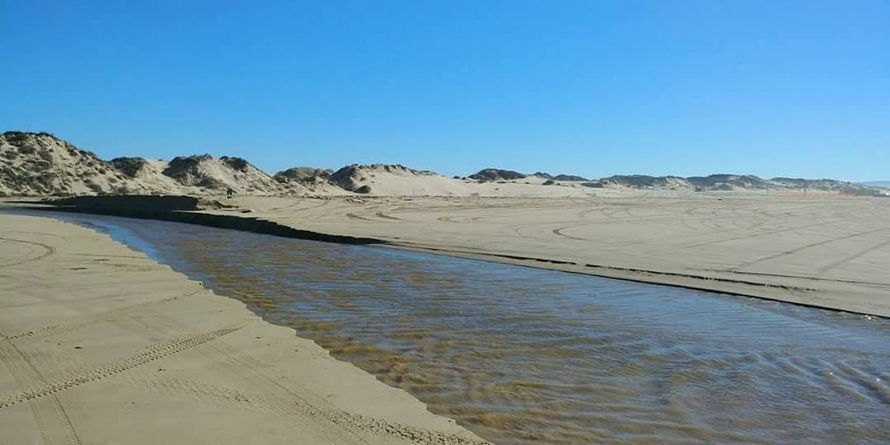

Live NOAA Data · Port San Luis Station
Tide Chart & Monthly Schedule
The tide decides when you cross the creek, when you tow in, and how much beach you get. This page pulls live predictions straight from NOAA, so it is always current. Times are local, heights in feet above MLLW.
Right Now
—
Loading current tide…
Next High
—
Next Low
—
Today's predicted tide curve. The orange marker is where the tide is right now. H = high tide, L = low tide.
| Date | High & Low Tides |
|---|---|
| Loading the monthly schedule… | |
Predictions from NOAA station 9412110 (Port San Luis), the closest official tide station to Oceano Dunes. Actual water levels can vary with storms and surf. Plan creek crossings and beach towing around low tide.
Coming Out?
Build Your Trip Plan in 60 Seconds
Tide-timed arrival windows for your exact dates, a personalized gear checklist, and the local tricks that keep you off the tow strap.
Plan Your Trip